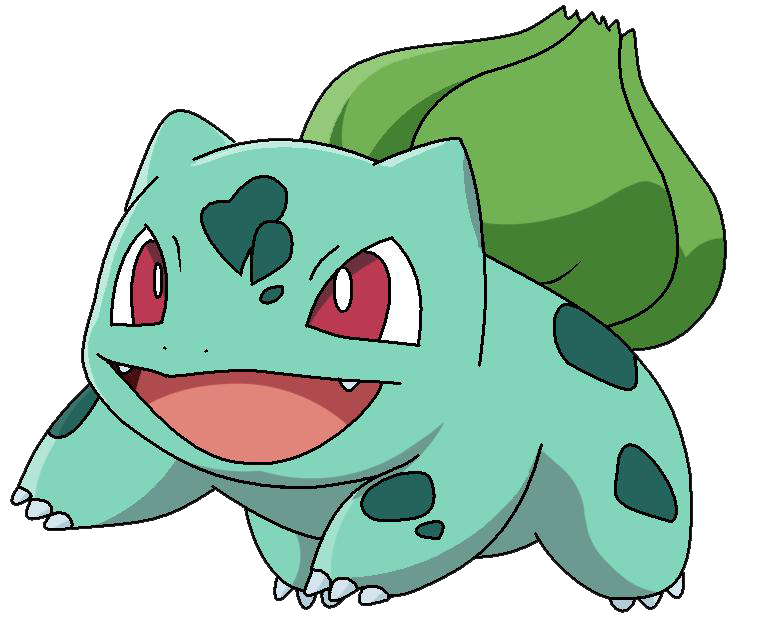

- Bulbasaur

- Charmander

- Squirtle

La palabra Pokémon es la abreviatura de Pocket Monsters, lo cual significa "Monstruos de Bolsillo". Cada uno de los 493 Pokémon existentes hasta el momento tienen alguna característica propia, ya sea su aspecto fisico,
o sus estadísticas de combate. Todos los Pokémon tienen habilidad, ataques, y un número determinado de stats
(ataque, defensa, velocidad, ataque especial, defensa especial), los que hacen que unos Pokémon sean mas poderosos que otros a la hora de combatir. Éstos, cuando alcanzan un
determinado nivel evolucionan, lo que hace que se vuelvan mas fuertes y grandes.
Muchos Pokémon viven aventuras con sus entrenadores, que son los que los entrenan para mejorar sus stats y aumentar su nivel. Los entrenadores y sus Pokémon comparten muchas aventuras juntos y son inseparables.
Algunos Pokémon no tienen entrenadores y están sueltos por las diferentes regiones (Kanto, Johto, Hoenn, Sinnoh), que utilizan a los Pokémon para combatir
contra los de otros entrenadores, y así demostrar su fuerza, pero otros entrenadores no prefieren combatir, y su única intención en el mundo de los Pokémon es cuidarlos y criarlos.
e son los que reciben el nombre de "Pokémon salvajes".
Éstos se pueden atrapar mediante unos objetos llamados PokéBalls ,que contienen en el interior al Pokémon atrapado.
Muchos entenadores llevan consigo un objeto denominado Pokédex, que es como una enciclopedia que da la información de todos los Pokémon que existen.